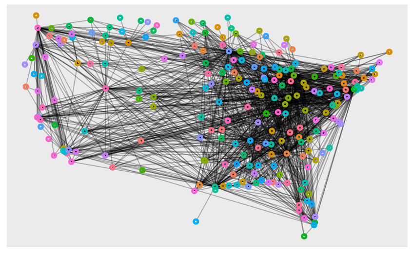

Oh my what a rollercoaster were these 2 weeks were, lots of suffering and internal pain, the course made me actually realise what silent tears were. But the funny part is that i think these 2 weeks were the best weeks i have had at srishti.
Oh my what a rollercoaster were these 2 weeks were, lots of suffering and internal pain, the course made me actually realise what silent tears were. But the funny part is that i think these 2 weeks were the best weeks i have had at srishti. Yes there were times that i wanted to smash my head into the computer just because of a wrong capital letter and yes i wanted to go home and sleep and not do the mountain of assignments Arvind assigned us to do but even after all this i feel like i have learnt a core skill which i enjoy and which i would pusue and develop over the years. Just the process of finding the perfect graph after failing at it for a thousand times and the satisfaction of seeing that little red line turn green over a piece of code when i figured out an error is uncomparable. I might be terrible at it right now but i am certain that i will keep practicing and sharpening my skill of this disastrous yet wonderful language of R._
Well anyways here are some graphs that i consider to be my best works:
This Graph is representing data from the diamonds dataset. It shows us the relantionship between price and carat through a line graph and also shows us the quality of the cut of the diamond with respect to the price and cut.
ggplot(diamonds, aes(x=carat, y=price, color=cut)) + geom_point() + geom_smooth() +theme_bw() + labs(title="Scatterplot line graph")This graph was done on the show brooklyn “NINETY NINE” and it shows the duration of time characters interacted with each other, what they talked about and their proffession.
## # A tibble: 13 × 3
## Names Sex profession
## <chr> <chr> <chr>
## 1 Jake Peralta M Detective
## 2 Amy Santiago F Detective
## 3 Charles Boyle M Detective
## 4 Terry Jeffords M Sergeant
## 5 Rosa Diaz F Detective
## 6 Captain Holt M Captain
## 7 Stranger 1 M Unemployed
## 8 Stranger 2 M Horseblood Seller
## 9 Stranger 3 M Retired
## 10 Stranger 4 M Unemployed
## 11 Ratko M Butcher
## 12 Gina Linetti F Personal Assistant
## 13 Stranger M Shop Owner## # A tibble: 66 × 5
## names_from names_to duration relation topic
## <chr> <chr> <dbl> <chr> <chr>
## 1 Jake Peralta Jake Peralta 16 N.A Introduction
## 2 Amy Santiago Jake Peralta 13 Friends Bantering
## 3 Amy Santiago Stranger 1 16 Strangers Interogation
## 4 Jake Peralta Amy Santiago 48 Friends Insulting
## 5 Jake Peralta Amy Santiago 22 Friends Insulting
## 6 Terry Jeffords Jake Peralta 20 Friends Work
## 7 Rosa Diaz Jake Peralta 2 Friends Work
## 8 Charles Boyle Jake Peralta 3 Friends Work
## 9 Terry Jeffords Jake Peralta 5 Friends Work
## 10 Charles Boyle Gina Linetti 44 Friends Insulting
## # … with 56 more rowsggraph(b99, layout = "linear", circular = TRUE) +
geom_edge_arc(aes(width = duration, color =topic), alpha = 0.8) +
scale_edge_width(range = c(0.2, 2)) +
geom_node_point(aes(color =profession, size = 2)) +
geom_node_text(aes(label = Names),repel = TRUE,
size = 3,
max.overlaps = 20) +
labs(edge_width = "duration") +
theme_graph()+
theme(legend.position = "right",
aspect.ratio = 1)This graph shows the frequency of arrivals and departures of flights in the USA.
my_layout <- cbind(x = airline2$Longitude, y = airline2$Latitude) %>% as.matrix()
g <- tbl_graph(nodes = airlines_nodes, edges = airlines_edges)
ggraph(g, layout = my_layout) + geom_edge_link0(alpha = 0.3) + geom_node_point(aes(color = Code), shape = 21, size = 1, stroke = 2) + theme(legend.position = "none")